删掉团队 harness 框架 61% 内容之后的一些思考：什么会被模型内化，什么永远不会，以及在开源框架遍地的今天，团队自己做 harness 的价值在哪。
最近我们对部门的 harness 框架 tdsql-harness 做了一轮彻底的 refactor：根指令删掉 61%，skills 砍掉 40%，agent 从 10 个减到 6 个。 删的过程中反复在问同一个问题——这一条，到底还有没有用？
几乎同一时间，Anthropic 公布他们为 Claude 5 系列删掉了 Claude Code 系统提示词的 80% 以上，编码评测没有可测量的损失。
这不是巧合。过去半年，Anthropic 与 OpenAI 各自独立地把 prompting 指引调转到了同一个方向：减法。而且不是「精简一点更好」这种风格建议，是明确指出——为旧模型写的指令，在新模型上会主动造成质量损失。
这篇文章是那轮瘦身之后的思考：什么该删、什么该留，以及在模型越来越强、开源 harness 日趋成熟的今天，团队自己做 harness 的价值究竟在哪。
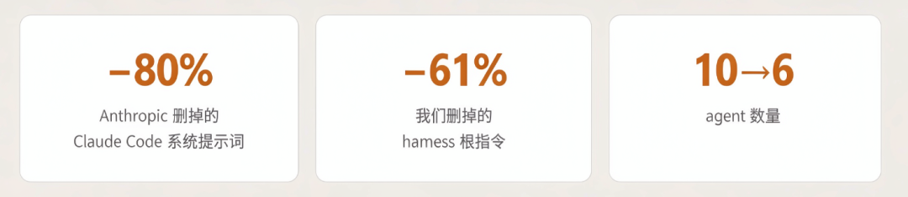
01
先把事实摆清楚：这是行业级的转向，不是某一家的风格偏好。
1.1 两家头部厂商独立收敛到「减法」
过去半年，Anthropic 与 OpenAI 各自更新了自家模型的 prompting 指引。两份文档彼此独立，却给出了同一个结论。
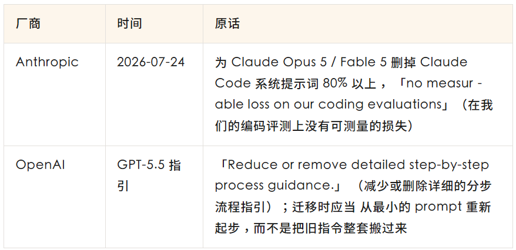
Anthropic 那条尤其值得停一下：删掉的是 Claude Code 自己的系统提示词——那是他们打磨了一年多、被数百万开发者每天使用的核心资产。一次删掉 80%，评测不掉。
1.2 关键的质变：冗余从中性变成了负数
如果只理解成「精简一点更好」，那就错过了这轮变化里最重要的部分。
在弱模型时代，多写一句话最坏的结果是浪费 token；今天，多写一句话可能覆盖掉模型自己更好的判断。两家给出的证据都很具体。
OpenAI 给了机制说明。它指出旧 prompt 常常过度规定流程，因为早期模型确实需要更多帮助才不跑偏，但在 GPT-5.5 上——
…that can add noise, narrow the model's search space, or lead to overly mechanical answers.
（那会引入噪音、缩小模型的搜索空间，或者导致机械化的回答）
「缩小搜索空间」是这轮变化的技术内核：你写下的每一条路径规定，都在从模型可选的方案里剪掉一部分。当模型比你更清楚哪条路好走时，这个剪枝就是净损失。
Anthropic 给了最直观的例子。如果你的 code review prompt 里写了「只报高危问题」或者「保守一点」：
…the model may follow that instruction literally and report less; ask it to report everything and filter in a separate pass instead.
（模型可能会照字面执行、报得更少；正确做法是让它全报，然后另开一轮过滤）
这句话戳中的是一个非常普遍的写法。「保守一点」在人类之间是个程度副词，在指令遵循能力足够强的模型那里是一条会被严格执行的规则——你以为在调节风格，实际在削减召回。
更值得注意的是官方的处置建议：删除，而不是改写。
If your prompt contains explicit verification instructions ("include a final verification step for any non-trivial task," "use a subagent to verify"), remove them: instructions like these cause over-verification on Claude Opus 5, and removing them reduces wasted tokens with no loss in quality. The same applies to legacy harness scaffolding that adds separate verification steps.
Anthropic《Prompting Claude Opus 5》
注意最后一句直接点名了 legacy harness scaffolding（遗留的 harness 脚手架）——这是官方在告诉你：你的 harness 里那些旧脚手架该拆了。
同一份文档还有两条同类的：
强调语反噬。
过去为了让模型可靠地调用工具，大家习惯写
CRITICAL: You MUST use this tool when...。现在官方建议降级成普通的Use this tool when...——因为新模型对系统提示词更敏感，激烈措辞会导致过度触发。同理，If in doubt, use [tool]这类兜底句现在是过度触发的主要来源。负面指令反噬。 如果系统提示词里写了「不要思考 / 不要推理」这类规则，官方要求直接删掉——那类指令反而会增加内部标签泄漏到可见输出里的概率。而且「点名负面项」比「笼统表述」效果更差。
这一节的结论
冗余指令在弱模型时代是中性的，最多浪费预算；在今天是负的。 它会缩小搜索空间、被字面执行、导致过度触发，并且可能覆盖掉模型本来更好的判断。
1.3 具体在变的四件事
Anthropic 那篇文章列了六个转变，其中四条最可操作。
一、规则 → 判据
这是全文最重要的一组对照。同样是控制代码注释风格，前后两版差别是这样的：
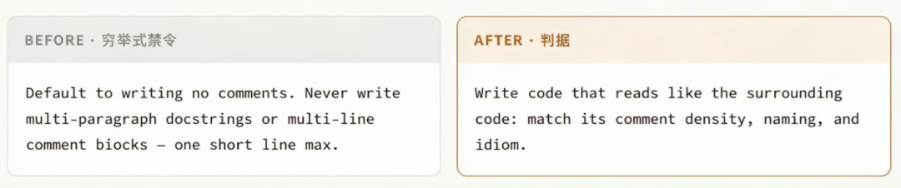
后者更短，但覆盖的情况更多。而且它避开了前者的一个硬伤：如果这个文件周围本来就是多行注释风格，前一版会给出明确错误的指导。穷举式禁令必然有覆盖不到的边界，而判据把边界判断交回给模型——它读得到上下文，你写规则的时候读不到。
二、前置全量上下文 → 渐进式披露
把详细指引（比如完整的 code review 流程）从常驻的系统提示词里挪进按需加载的 skill。skill 只有元数据（名字和描述，约 100 token）常驻，正文在被触发时才读进上下文。这样你可以装几十个 skill 而不撑爆注意力预算。
三、示例 → 接口设计
与其给模型一堆工具用法示例，不如把工具接口本身设计好。官方举的例子：把状态字段的取值枚举成 pending / in_progress / completed，这个枚举本身就在引导正确用法，不需要再配示例。
顺带一提，这条背后还有一个更微妙的观察：对足够强的模型，示例会成为约束——因为它比你给的例子更有想象力。
四、简单 markdown 规格 → 更丰富的引用物
用 HTML 产物、测试套件、函数签名、评分表（rubric）来替代纯文字描述的规格。理由很直接：代码和测试是可执行的规格，不存在解释歧义；文字描述则需要模型二次翻译。
案例：prefill 是怎么消失的
上面几条都还停留在「建议」层面。这里举一个具体案例——它不是建议，而是既成事实，也最能说明这轮变化的性质。
prefill（预填充助手回复的开头，用来强制输出格式）是一个存在多年的标准技巧——比如先塞一个 {"result": 进去，逼模型接着输出 JSON。几乎所有需要结构化输出的场景都用过它。
从 Claude 4.6 开始，这个能力从 API 层面直接移除了，带 prefill 的请求会返回 400 错误。
官方给的理由只有一句：
Model intelligence and instruction following have advanced such that most use cases of prefill no longer require it.
（模型智能和指令遵循已经进步到大多数 prefill 场景不再需要它）
这是「脚手架消失」最干净的一个案例，也为第三部分埋下伏笔：脚手架不是被优化掉的，是它防御的那个问题不存在了。
02
五道关卡：该不该写 → 怎么表达 → 给多大自由度 → 怎么验证 → 写完往哪里退。这一部分都能直接照做。
2.1 第一关：这一条到底该不该存在
最省力的优化是不写。Anthropic 在讲他们内部怎么用 skill 时给了一句很硬的判据：
Claude already knows how to code and can read your codebase. A skill that restates what Claude would do by default adds context without adding value.
（Claude 本来就会写代码，也能读你的代码库。一个复述模型默认行为的 skill，只增加上下文，不增加价值）
Addy Osmani 给了一个更好操作的版本，我觉得可以直接当尺子用：
删除判据
这条信息，agent 读你的代码库能不能找到？能找到就删。
按这条判据，下面这些是该删的：目录结构、架构概览、技术栈描述——全都可以通过读代码发现。而下面这些该留：用 uv 管理依赖、跑测试必须加 --no-cache，否则会有假通过、不明显的约定、运维坑、生产里还残留的废弃模式。
为什么冗余的代价不只是浪费 token
这是这一节最该讲透的一点。大家精简 prompt 时想的通常是省上下文预算，但真正的代价在别处：
You've added a file that the agent reads, then goes and confirms by reading your actual code, and now has to reconcile two sources of truth.
（你加了一个文件，agent 读了它，然后又去读真实代码确认一遍，现在它得调和两个事实来源）
制造第二个事实来源——这比浪费上下文严重得多。代码会变，你写的那份描述不会跟着变；当两者不一致时，agent 要么信了过期的那份，要么花额外的推理去判断该信谁。过期的文档比没有文档更危险。
Anthropic 官方的 skill 撰写指南把这道判断拆成了三个自查问题，每写一段就问一遍：
模型真的需要这段解释吗？ 我能不能假定它已经知道？ 这一段配得上它的 token 成本吗？
同一份指南里还有一个说法值得记住：「上下文窗口是公共资源」（The context window is a public good）。你的 skill 与系统提示词、对话历史、其它 skill 的元数据、以及用户真正的请求共享同一片空间。
一条我们自己在用的机械判据
抽象的提醒（「注意读者是 agent 不是人」）在实践中效果很差，因为它没法机械执行——你没法拿它去逐行扫描。我们后来换成了一句可以直接执行的问句：
逐行扫描用的判据
一个没有本次会话记忆的 agent 读到这一行，行为会怎么变？
答不出来就删。
它的好处是可以逐行套用，而且答案是二值的。用它扫一遍会发现几类东西必然出局：
元评论。
「这里以前出过 bug」「这条规则是因为某某才加的」「目前这块还不完善」——这些不含任何动作。更糟的是最后一类：告诉模型某条边界没有强制力，等于主动削弱那条边界。
自我辩护。
「这就是本 skill 存在的理由」这类句子是写给人看的，对读到它的 agent 不产生任何行为差异。
防御性否定。
「这不是指某某」——为了澄清而写的否定句，会把被否定的那个概念本身引入上下文。
2.2 第二关：从规则到判据
决定了要写，接下来是怎么表达。核心动作就是第一部分那组注释规则的对照：把穷举式禁令换成判据。
OpenAI 给了一条很实用的分界线，回答了「那什么时候还能用绝对措辞」：
Use those words for true invariants. […] For judgment calls, such as when to search, ask for clarification, use a tool, or keep iterating, prefer decision rules instead.
（把 MUST / NEVER 这类词留给真正的不变量。判断题——何时搜索、何时追问、何时用工具、何时继续迭代——一律改写成决策规则）
按这条分界线，我们 harness 里保留绝对措辞的地方只剩一类：不可逆动作。commit、push、MR 合入、deploy、workspace 之外的删除——这些是真正的不变量，写死没有代价。其余全部改成了判据。
还有一条容易被忽略的：正例优于禁令。Anthropic 明确说，与其写一堆「不要怎样」，不如给一个你想要的样子的正面例子——后者的效果更好。这和「负面指令反噬」是同一件事的两面。
2.3 第三关：路径放开，验收收紧
前面一直在讲「少写、别规定路径」，这很容易被理解成另一个极端：那就什么都别写，全交给模型。这是这一关要澄清的误区。
放开的是路径，收紧的是验收。这两件事必须同时做，只做前一半就是放羊。
「给目标」到底是给什么
OpenAI 那句被反复引用的话，重点常常被读漏了：
GPT-5.5 is strongest when the prompt defines the target outcome, success criteria, constraints, and available context, then lets the model choose the path.
（当 prompt 定义了目标结果、成功判据、约束和可用上下文，再让模型自己选路径时，GPT-5.5 表现最好）
四项里有三项是你必须写死的——目标、成功判据、约束。只有「路径」是留给模型的。 所以「给目标而不给步骤」不等于写得更少，而是把笔墨从「怎么做」挪到「怎么算做完」。
把验收写成可执行的形态
Addy Osmani 对 skill 的定义正是这一点的操作化。他要求 skill 是一个 workflow， 但他对 workflow 的定义值得逐字读：
A skill is a workflow: a sequence of steps the agent follows, with checkpoints that produce evidence, ending in a defined exit criterion.
（skill 是一个工作流：agent 依次执行的一串步骤，每一步都有产出证据的检查点，并以一个明确的退出条件结束）
他自己把重点点得很清楚：「真正有价值的不是那些 markdown，是退出条件。」 这里的「步骤」不是「先做 X 再做 Y」这种路径规定，而是 「做完 X → 拿出证据 → 达标才继续」。证据是什么？绿色的测试结果、一张截图、一段日志、一个评审通过。 没有证据，这一步就不算完成。
他反对的对立面也不是「给目标和约束」，而是读完不会被执行的参考资料：
If you put a 2,000-word essay on testing best practices into the agent's context, the agent reads it, generates plausible-looking text, and skips the actual testing.
（如果你往 agent 的上下文里塞一篇两千字的测试最佳实践长文，它会读完、生成一段看起来很像样的文字，然后跳过真正的测试）
把三方的说法并排看，会发现它们讲的是同一件事：
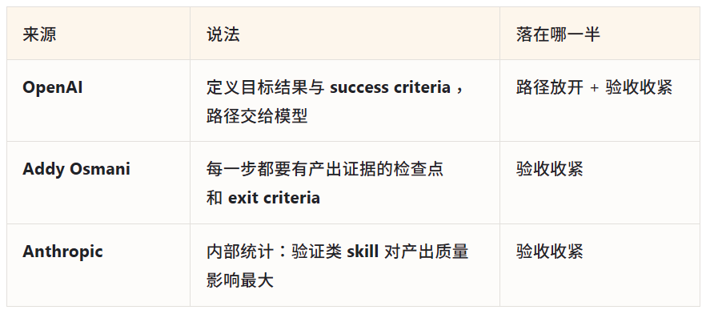
success criteria 和 exit criteria 是同一个东西的两种叫法。没有人在主张「一步步教模型做事」， 大家主张的是「把做完的标准写死」。
例外：什么时候连路径也要写死
确实存在需要规定路径的场景。Anthropic 用一个比喻界定了它的边界：
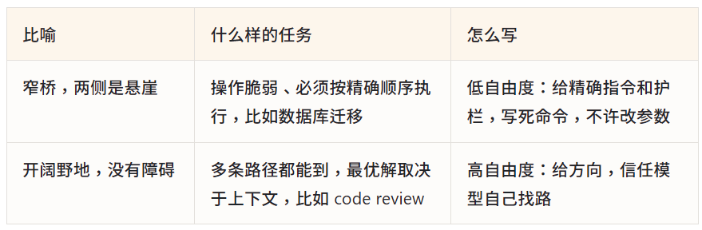
判据是操作的脆弱性，不是任务的重要性。数据库迁移要写死不是因为它重要， 而是因为顺序错了就无法挽回；code review 同样重要，但它没有唯一正确的路径。
这一关可以归结为一句：用判据而不是步骤，但判据必须能被机械判定。 「代码质量要好」不是判据——它产不出任何证据； 「测试变绿 / 产物存在 / diff 为空 / 命令 exit 0」才是。
2.4 第四关：先建裁判，再写内容
Anthropic 官方 skill 指南里有一条要求，我认为是全篇最容易被跳过、但价值最高的：
Create evaluations BEFORE writing extensive documentation. This ensures your Skill solves real problems rather than documenting imagined ones.
（在写大量文档之前先建评测。这能确保你的 skill 解决的是真问题，而不是在为想象出来的需求写文档）
它给的五步是：
不带 skill 跑一遍，记录下具体的失败——不是「效果不太好」，是「它在第三步漏掉了 X」。
针对这些 gap 建三个评测场景。
建立 baseline，量出没有 skill 时的表现。
写刚好够填补 gap 的最少内容——注意是「刚好够」。
迭代，对照 baseline 看有没有真的变好。
这套流程的副产品比它本身更重要：每条规则天然绑定了它防御的那个具体失败。这一点会在第三部分变成判断「规则是否已经过期」的唯一依据。
值得注意的是它对「最少内容」的定义方式——不是靠写的人自己把握分寸， 而是由评测反推：能让评测从不通过变成通过的那些内容就是必要的，多出来的都是待辩护的。 这也是为什么第一部分里 Anthropic 敢一次删掉 80%——他们有一套评测在兜底， 所以「删了会不会坏」不是靠判断，是靠跑出来的。
2.5 第五关：能沉降到工具层的，就别留在指令层
这一关讲的是「写完之后往哪里退」，也是最容易被忽略的一步。
Addy 给了一个我很认同的定位：
Think of AGENTS.md as a living document of friction you haven't fixed yet.
（把 AGENTS.md 当成一份「你还没修掉的摩擦」的清单）
推论很直接：当 agent 反复卡在同一个地方时，先去修根因——重构那段代码、加一条 linter 规则、补一个测试。穷尽这些手段之后，才考虑往指令文件里加话。
OpenAI 那边是同一件事的另一面。他们用 Codex agent 交付了一个约一百万行代码的生产 beta 产品，全程无人手写代码。他们的做法是：
By enforcing invariants, not micromanaging implementations, we let agents ship fast without undermining the foundation.
（通过强制不变量、而不是微管理实现，我们让 agent 既能快速交付又不破坏根基）
关键在于这些 invariants 是用 custom linter 和 structural test 强制的，不是靠 prompt 说服的。而他们的 AGENTS.md 只有约 100 行，定位是「a map, with pointers to deeper sources of truth elsewhere」（一张地图，指向别处更深的事实来源）——是目录，不是百科全书。
一条容易记的分工
指令层的强度取决于模型当下怎么读它；工具层不取决于。
所以凡是能表达成 linter 规则、测试用例、CI 门禁的，就不要留在指令里。 指令文件应该越修越短——因为内容在持续沉降。
案例：我们删掉了 61%
回到开头那三个数字。这轮 refactor 的范围和结果：
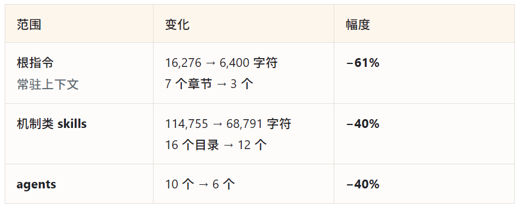
删掉的东西按类型归纳，大致是这么几类——如果你也要做一轮，可以照着扫：
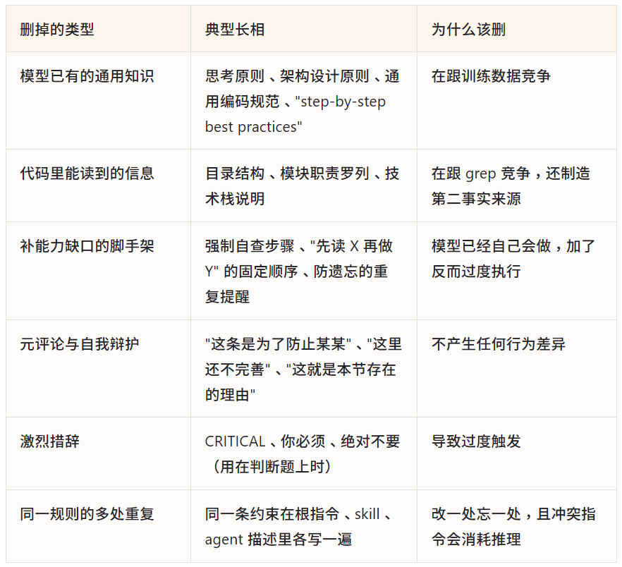
剩下的 6,400 字符里是什么？基本只有四类：什么算做完（成功判据与验收）、哪里必须停下来找人（gate 与升级条件）、状态放在哪（跨 session 恢复的约定）、什么不能自己做（不可逆动作的授权边界）。
为什么恰好剩下这四类，是第三部分要回答的问题。
03
前面都在讲删。这一部分回答：什么不能删、怎么判断，以及团队自己做 harness 的价值在哪。
3.1 总纲：每一条都是一个赌注
Anthropic 在讲 harness 设计时给了一句话，我认为是理解整个问题的钥匙：
Every component in a harness encodes an assumption about what the model can't do on its own.
（harness 里的每一个组件，都编码了一个关于「模型自己做不到什么」的假设）
——而这些假设 grow stale as the model gets more capable（随着模型变强而过期）。
把这句话反过来读，问题就清晰了：你 harness 里的每一条，都在赌一件模型做不到的事。问题只是这个赌注什么时候到期。
所以真正的工作不是「精简」，而是识别哪些赌注已经到期、哪些永远不会到期。
3.2 到期的假设长什么样
先建立模式识别。下面这些都是过去一年里真实到期的脚手架：
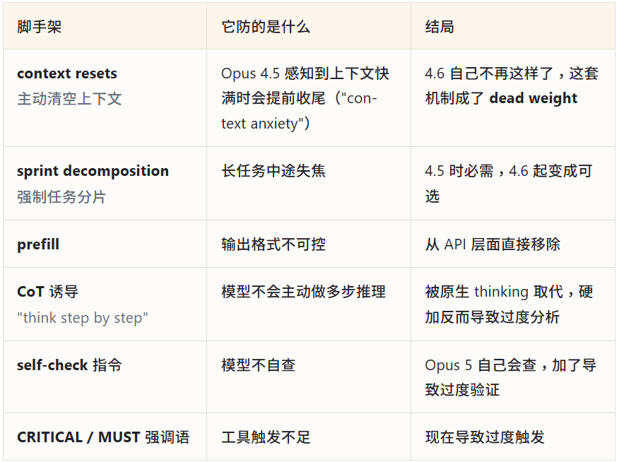
看这张表最右列会发现一个规律：它们不只是变得多余，好几条已经反转成了负作用。
而最左列有一个更重要的共同点：
识别到期赌注的模式
凡是在补模型能力缺口的，都会过期，只是早晚。
这条模式的价值在于它能前瞻：你现在写的规则，如果理由是「模型记不住 / 模型不会主动做 / 模型容易漏」，那它已经在到期队列里了，只是还没轮到。
3.3 怎么知道一条假设已经过期
知道了假设会到期，下一个问题就是：怎么知道某一条已经到期了？ 这个问题的答案，决定了「面向未来设计」到底该怎么做。
大家讨论「要不要为更强的模型提前设计」时，想的通常是「留个接口、留点余地」。但那是猜测，而且猜错的代价很高——你不知道下一代模型会内化哪一块。
我认为更好的答案.是换一个方向：
核心方法
你预测不了模型什么时候会内化某条规则，但你可以让「已经被内化」这件事变得
可检测。
做法就是第二部分第四关那件事：每条规则写下来的时候，就绑定它防御的具体失败模式。这样当模型进化到不再犯这个错时，你有明确的信号可以删它。
Addy Osmani 有一个同构的表述，他叫它「棘轮法」（ratchet approach）：
adding constraints only after observing real failures. Rules should trace back to actual mistakes, not speculation.
（只在观察到真实失败之后才加约束。规则必须能追溯到真实发生过的错误，而不是猜测）
反过来看，这解释了一个很普遍的现象：绝大多数 AGENTS.md 和 CLAUDE.md 只增不减。
根因不是懒。是这些规则当初就没写清防的是什么——所以谁也不敢删，因为谁也判断不了它是否还有用。文件于是变成一堆没人说得清是否还起作用的历史包袱。
一句话总结这一节：说不清防什么的规则，从写下来的那一刻就已经无法被淘汰了。
3.4 四层归属：分层回答「会不会被内化」
「这些东西以后会不会被模型内化掉」——这个问题没有统一答案，一概而论地回答「会」或「不会」都不对，得分层看。
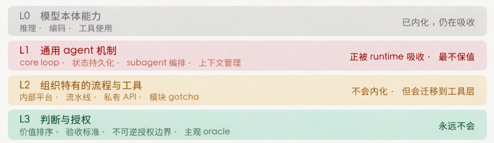
自建 harness 的立足点在 L2 和 L3 —— 不在 L1
注意 L2 的归宿写的是「迁移」不是「消失」：它不会被模型内化，但会从指令层沉降到工具层。
把第二部分删掉的那六类东西对照这张图看，会发现它们全部落在 L0 和 L1。而剩下的 6,400 字符——成功判据、gate、状态约定、授权边界——全部落在 L2 和 L3。
3.5 L3 永不内化的两条理由
这是全文我最想讲清楚的一节。L3 之所以永不内化，有两条理由，而且第二条比第一条硬得多。
理由一：信息不可达
价值排序（冲突时优先保什么）、私有 context（三年前那个模块为什么要那样设计）、主观 oracle（什么样算好看、什么样算合适）——这些信息物理上不在模型能到达的地方。
它不在公开语料里，否则每个组织都会是一样的答案；也不在你的 repo 里，否则 grep 就能拿到。它只存在于人的头脑和组织的运作中。这不是智力问题，是信息可达性问题。
顺着这条理由可以得到一个很干净的判据：
判断一条内容是否保值
问「这条信息的源头在哪里」——
在公开语料 → 会被内化，别写。
在 repo 或运行环境 → 会被工具拿到，别写。
在人的头脑或组织结构里 → 永远是你的责任。
理由二：责任不可转移
第一条理由有个漏洞：信息不可达，理论上可以靠「把信息补齐」来缩小。如果哪天所有组织知识都被结构化地喂给了模型呢？
第二条理由堵住了这个漏洞。Addy Osmani 说得非常锋利：
Only people inherit consequence. Agents can be asked to choose, route, merge, and escalate safely inside a policy, but they cannot inherit the consequences.
（只有人能继承后果。你可以让 agent 在policy 内安全地做选择、路由、合并、升级，但它无法继承后果）
就算把所有信息都给了模型，责任也不会转移。这不是能力问题，也不是信息问题，是社会结构问题——出了事，被问责的是人。这一条连理论上都无法被技术进步消解。
他把人必须持有的东西归成三件，我觉得可以直接拿来当 gate 设计的清单：
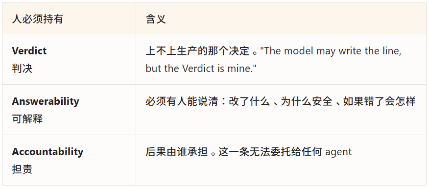
3.6 官方给出的「留」与「删」
上面是推导，那么有没有人给过直接的答案？有。Anthropic 那篇《Agent Harness Design: 3 Patterns》的第三个模式讲的正是这个：
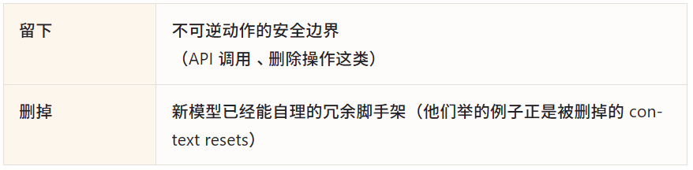
这和我们自己收敛的结果对上了。我们 harness 保留下来的内容里，第四节整节就是「不可逆动作只能由用户明示触发」——commit、push、MR 合入、deploy、workspace 之外的写入与删除，并且规定 subagent 永久不得执行其中任何一项。
这一条不是我们的偏好，是独立收敛的结论。
3.7 还有一类不会消失：结构性偏差
除了 L3，还有一类东西容易被漏掉，但同样不会随模型变强而消失——因为它不是能力缺口。
Anthropic 在讲 workflow 编排时点名了单上下文推理的三个失败模式，其中第二个最关键：
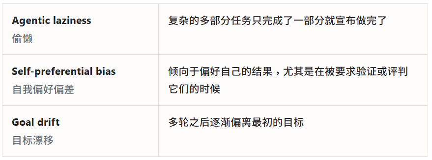
第二条不是「模型不够聪明」，而是评价者与被评价者是同一个造成的结构性问题。同一件事在另外两处被独立观察到：
Anthropic 在长任务实验中发现，模型自评时会 confidently praise the work——即便在人看来质量明显平庸。 Addy 的说法更直白："The model that wrote the code is way too nice grading its own homework."（写代码的那个模型给自己的作业打分，实在是太宽容了）
结论：独立 reviewer 和跨模型校验的价值，不随模型变强而衰减。
需要补充一个精确的观察：Anthropic 的实测是，evaluator 的价值边界只是外移了——以前需要 QA 复核的任务现在模型能自行完成，但复杂应用仍然从独立评审中获益。是边界移动，不是价值消失。这也是第二篇里跨模型协作那套机制到今天依然成立的原因。
3.7 度：自主度的上界
「面向未来设计」和「不能无条件信任」之间的平衡点在哪？我见过最好的一句表述来自 Addy：
Back pressure
you can only hand a loop as much autonomy as you can cheaply and reliably verify, and not one inch more.
你能交给一个循环的自主度，上限就是你能廉价且可靠地验证的那么多——一寸都不能多。
注意这个上界绑定的是验证能力，不是任务的重要程度，也不是模型的能力。这是个很实用的区别：一个很重要的任务，如果验证成本低、错了能回滚，反而可以给高自主度；一个不起眼的任务，如果错了发现不了，就不能放手。
配套的三个判定问题，我认为是「度」最好的操作化：
多快能知道我们错了？（How quickly will we know we're wrong）
多干净能撤销？（How cleanly can we undo）
什么能证明我们是对的？（What would prove we're right）
如果答案是「要很久才知道 / 很难撤销 / 只能相信它给的摘要」——那就不该给这个自主度。
顺着这条线还有一组反模式，其中几条在实践中相当常见：
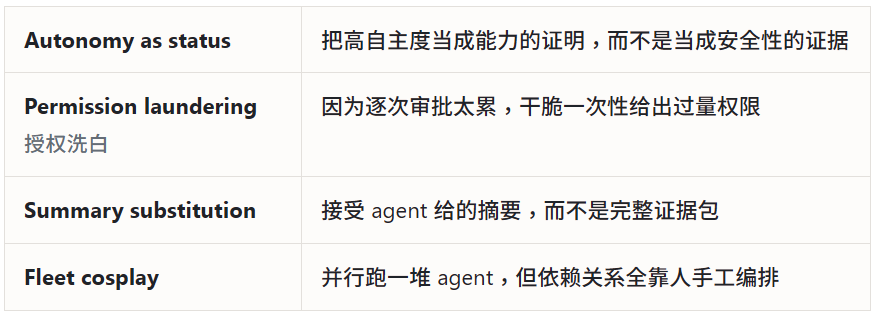
还有一个更大的背景：验证，而不是生成，才是真正的瓶颈。启动一个 agent 只要一句话，但收口一个 agent 一点也不便宜。当生成速度超过你能有意义地验证的速度，积累的就是认知债——代码看着干净、测试全绿，但没有人真正理解它。这种债最麻烦的地方在于它不像技术债那样通过摩擦暴露自己，它滋生的是虚假的信心。
这条上界还有一个直接推论，落在 gate 的设计上：gate 的数量上限，等于人能真正判断的数量上限。 我们 harness 里为此写了一条实测经验——人在 gate 面前会退化成快速点头， 所以对策不是减少 gate，而是让每个 gate 便宜到能真判： 把需要裁决的事项、证据和推荐前置，全文和 diff 作为可选读的附录。 一个人判不动的 gate 等于没有 gate，而且更糟——它制造了「已经审过」的假象。
3.8 团队为什么还要自己做 harness
最后回到那个最实际的问题：模型越来越强，开源 harness 框架也已相当成熟，团队为什么还要自己做一套？
先破一个误解：harness 不会消失，它在迁移
Counterintuitively, harnesses don't shrink; they migrate. Better models eliminate certain scaffolding but enable new capabilities requiring different scaffolding. The assumption landscape shifts rather than contracts.
（反直觉的是，harness 不是在缩小，而是在迁移。更好的模型消灭了某些脚手架，同时解锁了需要另一类脚手架的新能力。假设的地形是移动，不是收缩）
所以「以后就不需要 harness 了」这个判断是错的。真正在变的是哪一层需要你投入。
立足点在 L2 和 L3，不在 L1
回到那张分层图。开源 harness 框架能给你的，绝大部分是 L1——执行循环、状态管理、subagent 编排、上下文管理。而 L1 恰恰是最会被平台原生吸收、最不保值的一层：Claude Code、Codex 这些底层 harness 每个版本都在往里吸收这些能力。
这解释了一个很常见的错配：很多团队自建 harness，力气全花在 L1 上——重写自己的执行循环、设计自己的 workflow 引擎。那是投入最大、贬值最快的地方。
L2 具体长什么样：我们打通了什么
「组织特有的流程与工具」听起来抽象，落到实处其实非常具体。下面是 tdsql-harness 里真正构成不可替代性的那部分：
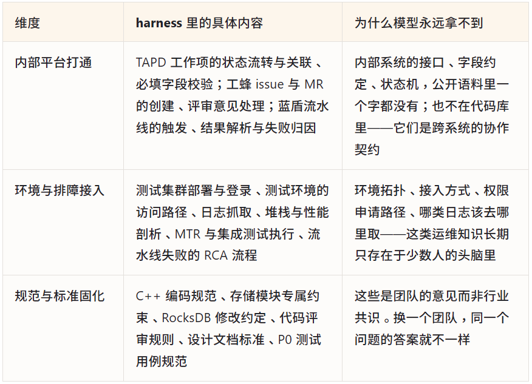
这三类内容有一个共同点，也正是它们不可替代的原因：把「换一个团队，这条会不会不一样」这个问题套上去，答案全是「会」。而 L0 和 L1 的内容套上去，答案全是「不会」——所以 L0 与 L1 注定由模型和平台提供。
还有一层更关键的区别值得点破。这些 skill 的价值不只是「告诉 agent 怎么做」，而是「让 agent 能做」。通过 MCP 工具、封装脚本和固化的操作流程，agent 获得的是操作内部系统的能力——它能自己去查工作项、触发流水线、登录测试集群拉日志、把评审意见处理完再回写状态。这不是知识注入，是能力接入。
差别有多大？可以对比一下两种状态：
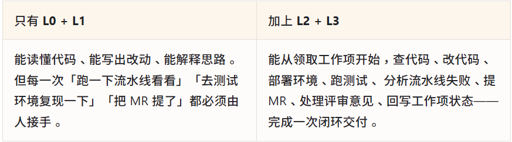
模型能力的提升会让左边那一列越来越强，但不会让它自己跨到右边。跨过去的那一步，只能由了解这些系统的团队铺设。这就是自建 harness 的杠杆所在：它决定的不是 agent 写得多好，而是 agent 能不能独立走完一整条交付链路。
最有力的论据：Anthropic 自己就是样本
如果要给「团队该不该自己做 harness」找一个证据，最好的一个是：模型厂商自己也在做。
Claude Code 的系统提示词、他们内部的 skills、他们的验证 skill——这些就是一份团队自建 harness。而这篇文章开头那个 80% 的数字，恰好帮我们回答了本文的问题：删到只剩 20% 之后，剩下的是什么？
按他们自己的描述，剩下的是：产品级上下文、团队的意见（team opinions）、gotchas、验证 skill、安全边界。
全部是 L2 和 L3。
还有一条实测可以佐证：他们统计过内部各类 skill 的效果，结论是——
Verification skills have had the most measurable impact on Claude's output quality internally.
（验证类 skill 是内部对 Claude 产出质量影响最可测量的一类）
为什么是验证类？因为验收标准是组织特有的、模型拿不到的信息。什么算「做完了」、什么算「够好了」——这在每个团队都不一样，而且不写下来模型无从得知。它落在 L3。
一个正面理由：自建 harness 是在偿还意图债
最后换一个角度。我们习惯把写 harness 理解成「给 agent 加约束」，但还有一个更正面的解释。
Addy 区分了三种独立的债：技术债在代码里，认知债是系统超出团队理解的部分，而意图债是——
Intent debt lives in the artifacts you may have never wrote: the goals, constraints, and rationale for why the system is the way it is.
… You can have low technical debt and high intent debt… each one bills you separately.
（意图债存在于那些你可能从未写下的文档里：目标、约束，以及系统为什么是现在这个样子的理由。你可以技术债很低而意图债很高……每一种都分别向你收费）
agent 把这个债从慢性变成了急性。原因是它每个 session 都是冷启动：
Whatever you haven't externalized into an artifact it can read, it doesn't have.
（凡是你没有外化成它能读到的文档的东西，它就没有）
人的意图债是分摊到几年里慢慢还的——新人靠口口相传、靠 code review 里的只言片语、靠在旁边坐三个月。agent 没有这条路径，你要为每一次未记录的决策重复付费。
而这笔投入的收益并不只作用于 agent：
一个顺带的好处
一个 agent 更容易理解和验证的系统，通常也是新人更容易接手、故障更容易排查的系统。
为 agent 沉淀 L2 和 L3，本质上是在补一直欠着的工程基础设施。
04
先把这两者各自落到具体的东西上，再给四个明天就能做的动作。
4.1 会过期的，有一个统一的判别式
回头看第三部分那张到期清单——context resets、任务分片、prefill、CoT 诱导、self-check 指令、CRITICAL 强调语——它们的共同点已经说过一次，这里再说一遍，因为它是全文最省力的一条工具：
判别式
凡是为了补模型能力缺口而写的，都会过期，只是早晚。
用法很简单：翻出你 harness 里的任意一条，问它为什么存在。 如果理由是「模型记不住」「模型不会主动做」「模型容易漏」——那它已经在到期队列里排着了， 只是还没轮到。你现在能做的，是给它绑一个具体的失败模式，好让轮到它的时候你认得出来。
4.2 不会过期的，是三件具体的事
「不变的是人的价值」这种说法没有用，因为它不能指导任何动作。 真正不会过期的东西是可以一条条指出来的，而且都不是因为它更难：
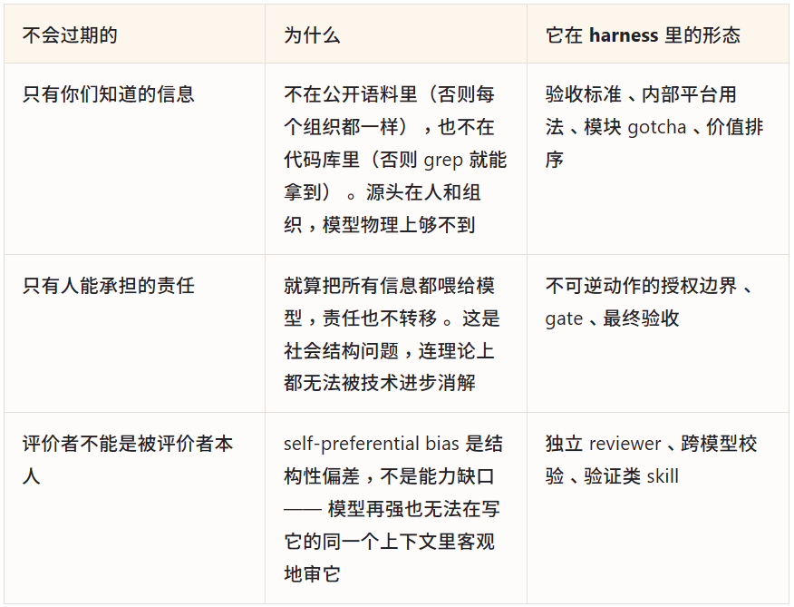
把这两张表叠起来看，harness 里的内容其实分成了两种资产： 一种每次模型升级都要减记一次，另一种越积越厚而且没人能替你积。 前者是 L0 和 L1，后者是 L2 和 L3。
4.3 四个明天就能做的动作
每加一条，先写清它防的是哪个具体失败。 写不出来就别加——你连它什么时候该删都判断不了。这是「面向未来」唯一可执行的形态。 每隔一个模型代际，做一次到期审计。 问 Anthropic 那个问题：what can I stop doing? 重点查那些理由是「模型记不住 / 不会主动做 / 容易漏」的条目——它们已经在到期队列里了。 把力气从 L1 挪到 L2 和 L3。 别去重写执行循环，那部分平台会替你做完。 去沉淀你们的验收标准、授权边界、内部工具用法、模块 gotcha——那部分没人能替你做。 能沉降到工具层的，就别留在指令层。 linter、测试、CI 门禁比任何措辞都可靠。 指令层的强度取决于模型当下怎么读它，工具层不取决于。
第一篇的结尾写过一句「工具变强了，做法就该跟着调」。写完这一篇，我想给它补一个更具体的版本：
要调的从来只是一半。
补模型能力的那一半，会被一次次吸收掉；
定验收标准、划授权边界、沉淀只有你们知道的东西——
那一半不会，而且会越积越厚。
所以「模型这么强了，我们还做 harness 干什么」这个问题，其实问反了。 模型能力的边界一直在外扩，但它扩不到「只有你们知道」和「只有人能承担」这两处。 harness 的长期价值，就等于这两处的面积。
参考来源
全部为一手来源，可直接访问核对。
Anthropic
The new rules of context engineering for Claude 5 generation models，Thariq Shihipar，2026-07-24 —— 删掉 80% 系统提示词、六个转变、规则→判据的 before/after 对照
（https://claude.com/blog/the-new-rules-of-context-engineering-for-claude-5-generation-models）
Prompting Claude Opus 5（Claude Platform Docs）—— 验证指令要删除而非改写、字面执行导致召回下降、legacy harness scaffolding
（https://platform.claude.com/docs/en/build-with-claude/prompt-engineering/prompting-claude-opus-5）
Prompting best practices（Claude Platform Docs）—— 过度提示导致过度触发、CRITICAL 措辞降级、prefill 从 API 移除
（https://platform.claude.com/docs/en/build-with-claude/prompt-engineering/claude-prompting-best-practices）
Agent Harness Design: 3 Patterns for Harnessing Claude's Intelligence，2026-04-02 —— 三个设计模式、what stays / what goes
（https://claude.com/blog/harnessing-claudes-intelligence）
Harness design for long-running application development，2026-03-24 —— 「每个组件都编码了一个假设」、context resets 成为 dead weight、evaluator 价值边界外移
（https://www.anthropic.com/engineering/harness-design-long-running-apps）
A harness for every task: dynamic workflows in Claude Code，2026-06-02 —— agentic laziness / self-preferential bias / goal drift
（https://claude.com/blog/a-harness-for-every-task-dynamic-workflows-in-claude-code）
Lessons from building Claude Code: How we use skills，2026-06-03 —— 复述默认行为的 skill 零价值、验证类 skill 影响最大
（https://claude.com/blog/lessons-from-building-claude-code-how-we-use-skills）
Skill authoring best practices（Claude Platform Docs）—— 上下文窗口是公共资源、自由度分级、先建评测
（https://platform.claude.com/docs/en/agents-and-tools/agent-skills/best-practices）
Effective context engineering for AI agents，2025-09-29 —— 注意力预算、context rot
（https://www.anthropic.com/engineering/effective-context-engineering-for-ai-agents）
OpenAI
Harness engineering: leveraging Codex in an agent-first world，2026-02-11 —— 强制不变量而非微管理实现、AGENTS.md 约 100 行的「地图」、用 linter 与 structural test 强制
（https://openai.com/index/harness-engineering/）
GPT-5.5 prompt guidance（OpenAI 开发者文档）—— 删除分步流程指引、过度指定缩小搜索空间、真正的不变量 vs 判断题、从最小 prompt 重新起步
（https://developers.openai.com/api/docs/guides/prompt-guidance?model=gpt-5.5）
Addy Osmani（Google Chrome 团队工程主管，个人博客）
Agent Harness Engineering，2026-04-19 —— harness 不是缩小而是迁移、棘轮法
（https://addyosmani.com/blog/agent-harness-engineering/）
Own the Outer Loop，2026-07-15 —— 只有人能继承后果、Verdict / Answerability / Accountability
（https://addyosmani.com/blog/own-the-outer-loop/）
Earning taste and judgment，2026-07-14 —— 监督者悖论
（https://addyosmani.com/blog/earning-judgment/）
Software Factories, Light and Dark，2026-07-20 —— back pressure、验证才是瓶颈
（https://addyosmani.com/blog/software-factories/）
Agentic Autonomy Levels，2026-07-02 —— 六级自主度、三个判定问题、四个反模式
（https://addyosmani.com/blog/agentic-autonomy-levels/）
The Intent Debt，2026-06-05 —— 技术债 / 认知债 / 意图债的区分
（https://addyosmani.com/blog/intent-debt/）
Stop Using /init for AGENTS.md，2026-02-23 —— 能找到就删、第二个事实来源、还没修的摩擦
（https://addyosmani.com/blog/agents-md/）
Agent Skills，2026-05-03 —— 流程优先于散文
（https://addyosmani.com/blog/agent-skills/）
The Orchestration Tax，2026-05-24 —— 启动便宜、收口昂贵
（https://addyosmani.com/blog/orchestration-tax/）
Comprehension Debt，2026-03-14 —— 认知债滋生虚假信心
（https://addyosmani.com/blog/comprehension-debt/）
感谢你读到这里，不如关注一下？👇